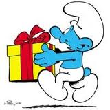
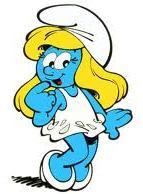

Cette série de bandes dessinées belges a été créée par Peyo à partir de 1959 (1ère apparition des Schtroumpfs en 1958 dans le journal de Spirou), elle raconte les aventures de petites créatures bleues habitant dans un village champignon situé au milieu d'une forêt.
Les seize premiers albums ont été créés par le créateur.
Les six premiers :
| Quelques personnages | ||
|---|---|---|
| Personnage | Fonction | Signes distinctifs |
|
Grand Schtroumpf
|
Chef, doyen, sorcier du village | barbe blanche, culotte et bonnet rouges |
| schtroumpfALunettes | Sous-chef du village | porte des lunettes |
| schtroumpfFarceur  | offre des cadeaux qui explosent | tient un cadeau entre ses mains |
| Grand Schtroumpf  | Personnage de sexe féminin | cheveux longs blonds |